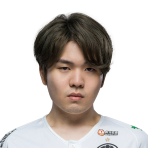

Mid
- "Faker"
- "Rookie"
Lee "Faker" Sang-Hyeok
Känd som det bästa proffset någonsin. 9 vinster i LCK Championships, 2 MSI Championships, En vinst i Rift Rivals, ett IEM Championship och 3 vinster i World Championships. 500 vinster till 247 förluster.
Song "Rookie" Eui-Jin
Den enda mid lanern som är jämförbar med Faker. Spelat 700 games med en 59% win rate. Han har vunnit ett LCK Championship, ett LPL Championship, ett LPL Regional Championship, en Demacia Cup, en Rift Rivals Championship, ett NEST Championship och ett World Championship.